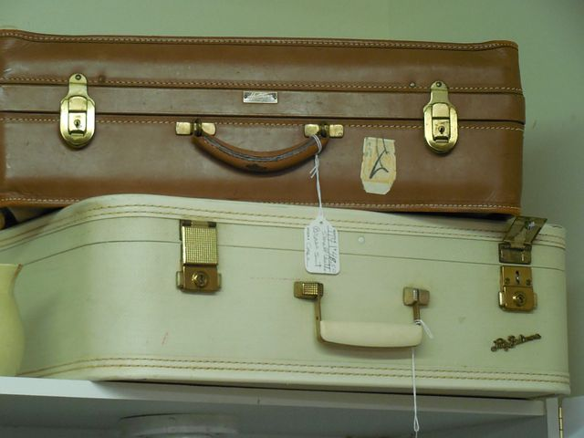
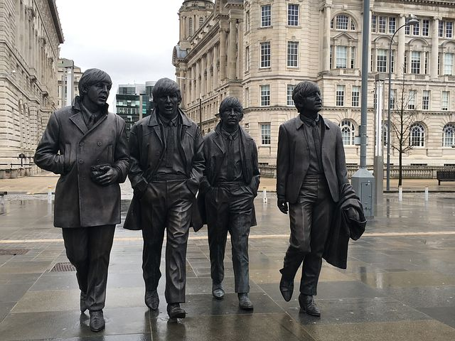
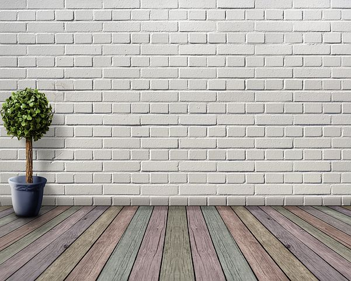
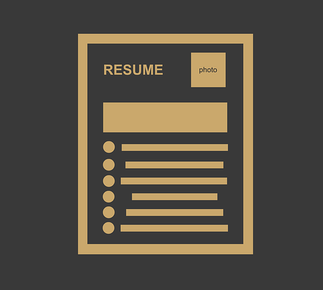
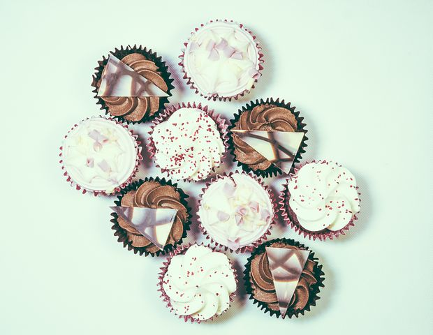

Kristi Hwang
Kristi's Projects
Recently Completed
 Wikipedia clone
Wikipedia clone A visual clone of Wikipedia's home page on 15 March 2018. Incorporated bootstrap features to grid multiple columns and rows. Created using mainly HTML and CSS.

Resort Vacation A website created for client's resort webpage detailing different vacation packages available. Costs, availability, and details broken down into separate panels within a container. HTML and CSS with some Bootstrap.

Band Tribute A webpage dedicated to our team's favorite time-less band. Included is a side-bar to show any upcoming tribute concerts in the area. Use of HTML and CSS.

Interior Decorator A webpage made for an interior designer's portfolio page. Per request, it guides the viewer through the different stages of the interior design process with its "Before", "During", and "After" snapshots. Use of HTML, CSS.

Team Resume Our team's current resume, presented side by side. It illustrates each person's individual style as seen in contrast to each other. Use of HTML and CSS.

Cupcake Shop A website for a cupcake shop giving information on the types of cakes on offer. It also includes a section where store hours and information is available. HTML and CSS.
About Kristi
Background
Kristi has a diverse educational background ranging in several subject areas. She received her undergraduate degree from University of California in Literature and Political Science with a minor in Economics. She initially had plans to attend law school after graduation, but after a number of internships and experiences shadowing lawyers, realised she wanted a different type of career. She gravitated towards Economics, which led her to work in bank operations after graduation. After some time working, she decided she wanted to go back to school to get her Master's degree in Finance. She attended post-graduate education abroad to broaden her horizon and do some traveling along with her studies. Kristi received her Master's in International Finance from the United Kingdom.
While surfing the web, Kristi discovered Code Academy and started a Ruby course on a whim. With the wealth of online coding resources and employer's increasing demand of software skillsets, she thought it a good idea to look more into coding. After a few weeks dabbling in online courses and enjoying the learning experience, she decided she wanted a career shift into tech and web deveopment. To fully immerse herself in coding she realised a coding bootcamp was the way to go. And with more research comparing programs, she found Epicodus. Since they uniquely offered an internship program after its structured program, it made it an easy choice to enroll in the program and get started right away.
Kristi's main draw to coding is the aspect of building something from the ground up. She had always enjoyed creating rather than dissecting, and likes the logical process of coding. She is also looking forward to working on practical applications of her-soon-to-be new skillset. Kristi especially likes the idea that a programmer needs to be constantly learning, and looks forward to doing so with her first programming job.
Interests/Hobbies
Kristi enjoys reading outdoors (usually history), bicycling, swimming, kayaking, some extreme sports, and rolling down grassy hills. Any water related sport and snowboarding is always a good time. When she is feeling less outdoorsy, she enjoys single malt tastings and cooking at home with newly discovered spices. She contains different varying levels of wanderlust at any given time, but will travel whenever given the chance. She especially hopes to see most of Eastern Europe in the near future. Being a Californian, she naturally loves her authentic tacos and is big on Argentinian and Brazilian cuisine. She already misses the availability of an extensive range of Kimchee here from California. But is willing to forgive Seattle for this, due to the high density of its craft breweries in the area. She is a light hiker but hopes to be converted into a serious one while living in Seattle.
Get in Touch!
Inquiries
For business inquiries, please contact me via email
Social Media